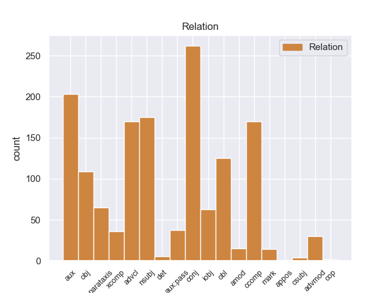
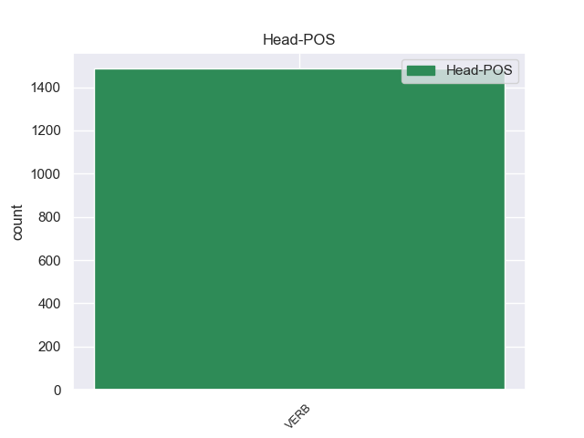
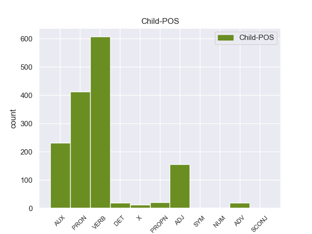

Distribution of features within this leaf



Agreement Rules sorted by frequency.
When the head token is VERB and the dependent token is VERB.
1 από _ _ _ _ 0 _ _ _
2 τα _ _ _ _ 0 _ _ _
3 δε _ _ _ _ 0 _ _ _
4 έγγραφα _ _ _ _ 0 _ _ _
5 της _ _ _ _ 0 _ _ _
6 υπόθεσης _ _ _ _ 0 _ _ _
7 προκύπτει προκύπτειr VERB _ Mood=Ind|Number=Sing|Person=3|Tense=Pres|VerbForm=Fin 0 _ _ _
8 ότι _ _ _ _ 0 _ _ _
9 δεν _ _ _ _ 0 _ _ _
10 φαίνεται φαίνεταιr VERB _ Mood=Ind|Number=Sing|Person=3|Tense=Pres|VerbForm=Fin 7 ccomp _ _
11 να _ _ _ _ 0 _ _ _
12 έχει _ _ _ _ 0 _ _ _
13 ληφθεί _ _ _ _ 0 _ _ _
14 υπόψη _ _ _ _ 0 _ _ _
15 η _ _ _ _ 0 _ _ _
16 σύσταση _ _ _ _ 0 _ _ _
17 να _ _ _ _ 0 _ _ _
18 διαβιβαστεί _ _ _ _ 0 _ _ _
19 η _ _ _ _ 0 _ _ _
20 αίτηση _ _ _ _ 0 _ _ _
21 άρσης _ _ _ _ 0 _ _ _
22 της _ _ _ _ 0 _ _ _
23 ασυλίας _ _ _ _ 0 _ _ _
24 μόνον _ _ _ _ 0 _ _ _
25 επί _ _ _ _ 0 _ _ _
26 τη _ _ _ _ 0 _ _ _
27 βάσει _ _ _ _ 0 _ _ _
28 ακριβέστερου _ _ _ _ 0 _ _ _
29 προσδιορισμού _ _ _ _ 0 _ _ _
30 όσον _ _ _ _ 0 _ _ _
31 αφορά _ _ _ _ 0 _ _ _
32 τους _ _ _ _ 0 _ _ _
33 τόπους _ _ _ _ 0 _ _ _
34 και _ _ _ _ 0 _ _ _
35 τα _ _ _ _ 0 _ _ _
36 πρόσωπα _ _ _ _ 0 _ _ _
37 που _ _ _ _ 0 _ _ _
38 εμπλέκονται _ _ _ _ 0 _ _ _
39 σ _ _ _ _ 0 _ _ _
40 την _ _ _ _ 0 _ _ _
41 υπόθεση _ _ _ _ 0 _ _ _
42 . _ _ _ _ 0 _ _ _
When the head token is VERB and the dependent token is VERB. and the head token is VERB and the dependent token is PRON.
1 Αυτό _ _ _ _ 0 _ _ _
2 μπορεί _ _ _ _ 0 _ _ _
3 να _ _ _ _ 0 _ _ _
4 μην _ _ _ _ 0 _ _ _
5 οδηγήσει _ _ _ _ 0 _ _ _
6 σ _ _ _ _ 0 _ _ _
7 τη _ _ _ _ 0 _ _ _
8 λήξη _ _ _ _ 0 _ _ _
9 του _ _ _ _ 0 _ _ _
10 εν _ _ _ _ 0 _ _ _
11 λόγω _ _ _ _ 0 _ _ _
12 ζητήματος _ _ _ _ 0 _ _ _
13 αλλά _ _ _ _ 0 _ _ _
14 , _ _ _ _ 0 _ _ _
15 σ _ _ _ _ 0 _ _ _
16 τη _ _ _ _ 0 _ _ _
17 μορφή _ _ _ _ 0 _ _ _
18 υπό _ _ _ _ 0 _ _ _
19 την _ _ _ _ 0 _ _ _
20 οποία _ _ _ _ 0 _ _ _
21 την éτη PRON _ Case=Acc|Gender=Fem|Number=Sing|Person=3|PrepCase=Npr|PronType=Prs 22 obj _ _
22 λάβαμε λάβαμar VERB _ Mood=Sub|Number=Sing|Person=3|Tense=Pres|VerbForm=Fin 0 _ _ _
23 , _ _ _ _ 0 _ _ _
24 αυτή _ _ _ _ 0 _ _ _
25 η _ _ _ _ 0 _ _ _
26 αίτηση _ _ _ _ 0 _ _ _
27 άρσης _ _ _ _ 0 _ _ _
28 της _ _ _ _ 0 _ _ _
29 ασυλίας _ _ _ _ 0 _ _ _
30 ήταν _ _ _ _ 0 _ _ _
31 , _ _ _ _ 0 _ _ _
32 κατά _ _ _ _ 0 _ _ _
33 την _ _ _ _ 0 _ _ _
34 άποψη _ _ _ _ 0 _ _ _
35 της _ _ _ _ 0 _ _ _
36 Επιτροπής _ _ _ _ 0 _ _ _
37 Νομικών _ _ _ _ 0 _ _ _
38 Θεμάτων _ _ _ _ 0 _ _ _
39 , _ _ _ _ 0 _ _ _
40 απαράδεκτη _ _ _ _ 0 _ _ _
41 , _ _ _ _ 0 _ _ _
42 άποψη _ _ _ _ 0 _ _ _
43 την _ _ _ _ 0 _ _ _
44 οποία _ _ _ _ 0 _ _ _
45 συνιστώ _ _ _ _ 0 _ _ _
46 σ _ _ _ _ 0 _ _ _
47 το _ _ _ _ 0 _ _ _
48 Σώμα _ _ _ _ 0 _ _ _
49 να _ _ _ _ 0 _ _ _
50 υιοθετήσει _ _ _ _ 0 _ _ _
51 . _ _ _ _ 0 _ _ _
When the head token is VERB and the dependent token is VERB. and the head token is VERB and the dependent token is PRON. and the head token is VERB and the dependent token is AUX.
1 Ο _ _ _ _ 0 _ _ _
2 Χάουμε _ _ _ _ 0 _ _ _
3 Μάτας _ _ _ _ 0 _ _ _
4 είχε είer AUX _ Mood=Ind|Number=Sing|Person=3|Tense=Imp|VerbForm=Fin 5 aux _ _
5 λάβει λάβr VERB _ Gender=Masc|Number=Sing|Tense=Past|VerbForm=Part 0 _ _ _
6 παρανόμως _ _ _ _ 0 _ _ _
7 500.000 _ _ _ _ 0 _ _ _
8 ευρώ _ _ _ _ 0 _ _ _
9 ( _ _ _ _ 0 _ _ _
10 δημόσια _ _ _ _ 0 _ _ _
11 χρήματα _ _ _ _ 0 _ _ _
12 ) _ _ _ _ 0 _ _ _
13 , _ _ _ _ 0 _ _ _
14 για _ _ _ _ 0 _ _ _
15 να _ _ _ _ 0 _ _ _
16 πληρώσει _ _ _ _ 0 _ _ _
17 δημοσιογράφο _ _ _ _ 0 _ _ _
18 που _ _ _ _ 0 _ _ _
19 έγραφε _ _ _ _ 0 _ _ _
20 τις _ _ _ _ 0 _ _ _
21 ομιλίες _ _ _ _ 0 _ _ _
22 του _ _ _ _ 0 _ _ _
23 . _ _ _ _ 0 _ _ _
When the head token is VERB and the dependent token is VERB. and the head token is VERB and the dependent token is PRON. and the head token is VERB and the dependent token is AUX. and the head token is VERB and the dependent token is ADJ.
1 « _ _ _ _ 0 _ _ _
2 Η _ _ _ _ 0 _ _ _
3 πόλη _ _ _ _ 0 _ _ _
4 μας _ _ _ _ 0 _ _ _
5 κήρυξε κήρυξar VERB _ Mood=Ind|Number=Sing|Person=3|Tense=Past|VerbForm=Fin 0 _ _ _
6 καθεστώς καθεστώς ADJ _ Gender=Masc|Number=Sing 5 obj _ _
7 ημιαυτονομίας _ _ _ _ 0 _ _ _
8 . _ _ _ _ 0 _ _ _
When the head token is VERB and the dependent token is VERB. and the head token is VERB and the dependent token is PRON. and the head token is VERB and the dependent token is AUX. and the head token is VERB and the dependent token is ADJ. and the head token is VERB and the dependent token is ADV.
1 Ίσως _ _ _ _ 0 _ _ _
2 να _ _ _ _ 0 _ _ _
3 σας _ _ _ _ 0 _ _ _
4 δεχθούν _ _ _ _ 0 _ _ _
5 εκεί _ _ _ _ 0 _ _ _
6 και _ _ _ _ 0 _ _ _
7 να _ _ _ _ 0 _ _ _
8 σας _ _ _ _ 0 _ _ _
9 χαιρετίσουν _ _ _ _ 0 _ _ _
10 , _ _ _ _ 0 _ _ _
11 αλλά _ _ _ _ 0 _ _ _
12 μόνο _ _ _ _ 0 _ _ _
13 σπάνια σπάνι ADV _ Gender=Fem|Number=Plur 14 advmod _ _
14 επιτρέπουν επιτρέπr VERB _ Mood=Ind|Number=Plur|Person=3|Tense=Pres|VerbForm=Fin 0 _ _ _
15 σ _ _ _ _ 0 _ _ _
16 την _ _ _ _ 0 _ _ _
17 Ευρωπαϊκή _ _ _ _ 0 _ _ _
18 Ένωση _ _ _ _ 0 _ _ _
19 να _ _ _ _ 0 _ _ _
20 τους _ _ _ _ 0 _ _ _
21 αναπτύξει _ _ _ _ 0 _ _ _
22 την _ _ _ _ 0 _ _ _
23 πολιτική _ _ _ _ 0 _ _ _
24 της _ _ _ _ 0 _ _ _
25 και _ _ _ _ 0 _ _ _
26 τα _ _ _ _ 0 _ _ _
27 σχέδιά _ _ _ _ 0 _ _ _
28 της _ _ _ _ 0 _ _ _
29 . _ _ _ _ 0 _ _ _
When the head token is VERB and the dependent token is VERB. and the head token is VERB and the dependent token is PRON. and the head token is VERB and the dependent token is AUX. and the head token is VERB and the dependent token is ADJ. and the head token is VERB and the dependent token is ADV. and the head token is VERB and the dependent token is DET.
1 Δεν _ _ _ _ 0 _ _ _
2 πιστεύω _ _ _ _ 0 _ _ _
3 να _ _ _ _ 0 _ _ _
4 υπάρχουν υπάρχουber VERB _ Mood=Ind|Number=Plur|Person=3|Tense=Pres|VerbForm=Fin 0 _ _ _
5 πολλοί πολλο DET _ Gender=Masc|Number=Plur 4 advmod _ _
6 άλλοι _ _ _ _ 0 _ _ _
7 συνομιλητές _ _ _ _ 0 _ _ _
8 από _ _ _ _ 0 _ _ _
9 την _ _ _ _ 0 _ _ _
10 πλευρά _ _ _ _ 0 _ _ _
11 των _ _ _ _ 0 _ _ _
12 Παλαιστινίων _ _ _ _ 0 _ _ _
13 . _ _ _ _ 0 _ _ _
When the head token is VERB and the dependent token is VERB. and the head token is VERB and the dependent token is PRON. and the head token is VERB and the dependent token is AUX. and the head token is VERB and the dependent token is ADJ. and the head token is VERB and the dependent token is ADV. and the head token is VERB and the dependent token is DET. and the head token is VERB and the dependent token is PROPN.
1 Ο _ _ _ _ 0 _ _ _
2 ΟΗΕ οηε PROPN _ Gender=Masc|Number=Sing 4 nsubj _ _
3 δεν _ _ _ _ 0 _ _ _
4 εξακρίβωσε εξακρίβωσar VERB _ Mood=Ind|Number=Sing|Person=3|Tense=Past|VerbForm=Fin 0 _ _ _
5 τα _ _ _ _ 0 _ _ _
6 αίτια _ _ _ _ 0 _ _ _
7 θανάτου _ _ _ _ 0 _ _ _
8 του _ _ _ _ 0 _ _ _
9 Μουάμαρ _ _ _ _ 0 _ _ _
10 αλ _ _ _ _ 0 _ _ _
11 Καντάφι _ _ _ _ 0 _ _ _
When the head token is VERB and the dependent token is VERB. and the head token is VERB and the dependent token is PRON. and the head token is VERB and the dependent token is AUX. and the head token is VERB and the dependent token is ADJ. and the head token is VERB and the dependent token is ADV. and the head token is VERB and the dependent token is DET. and the head token is VERB and the dependent token is PROPN. and the head token is VERB and the dependent token is X.
1 Η _ _ _ _ 0 _ _ _
2 Γαλλία _ _ _ _ 0 _ _ _
3 δήλωσε _ _ _ _ 0 _ _ _
4 ότι _ _ _ _ 0 _ _ _
5 « _ _ _ _ 0 _ _ _
6 ο _ _ _ _ 0 _ _ _
7 αλ αλ X _ Gender=Masc|Number=Sing 10 nsubj _ _
8 Σενούσι _ _ _ _ 0 _ _ _
9 έχει _ _ _ _ 0 _ _ _
10 συλληφθεί συλληφθεί VERB _ Gender=Masc|Number=Sing|Tense=Past|VerbForm=Part 0 _ _ _
11 μετά _ _ _ _ 0 _ _ _
12 από _ _ _ _ 0 _ _ _
13 συνεργασία _ _ _ _ 0 _ _ _
14 Γάλλων _ _ _ _ 0 _ _ _
15 και _ _ _ _ 0 _ _ _
16 Μαυριτανών _ _ _ _ 0 _ _ _
17 πρακτόρων _ _ _ _ 0 _ _ _
18 . _ _ _ _ 0 _ _ _
When the head token is VERB and the dependent token is VERB. and the head token is VERB and the dependent token is PRON. and the head token is VERB and the dependent token is AUX. and the head token is VERB and the dependent token is ADJ. and the head token is VERB and the dependent token is ADV. and the head token is VERB and the dependent token is DET. and the head token is VERB and the dependent token is PROPN. and the head token is VERB and the dependent token is X. and the head token is VERB and the dependent token is SYM.
1 Según _ _ _ _ 0 _ _ _
2 la _ _ _ _ 0 _ _ _
3 Oficina _ _ _ _ 0 _ _ _
4 de _ _ _ _ 0 _ _ _
5 el _ _ _ _ 0 _ _ _
6 Censo _ _ _ _ 0 _ _ _
7 en _ _ _ _ 0 _ _ _
8 2000 _ _ _ _ 0 _ _ _
9 , _ _ _ _ 0 _ _ _
10 los _ _ _ _ 0 _ _ _
11 ingresos _ _ _ _ 0 _ _ _
12 medios _ _ _ _ 0 _ _ _
13 por _ _ _ _ 0 _ _ _
14 hogar _ _ _ _ 0 _ _ _
15 en _ _ _ _ 0 _ _ _
16 el _ _ _ _ 0 _ _ _
17 condado _ _ _ _ 0 _ _ _
18 eran ser VERB _ Mood=Ind|Number=Plur|Person=3|Tense=Imp|VerbForm=Fin 0 _ _ _
19 de _ _ _ _ 0 _ _ _
20 $ _ _ _ _ 0 _ _ _
21 30,457 _ _ _ _ 0 _ _ _
22 , _ _ _ _ 0 _ _ _
23 y _ _ _ _ 0 _ _ _
24 los _ _ _ _ 0 _ _ _
25 ingresos _ _ _ _ 0 _ _ _
26 medios _ _ _ _ 0 _ _ _
27 por _ _ _ _ 0 _ _ _
28 familia _ _ _ _ 0 _ _ _
29 eran _ _ _ _ 0 _ _ _
30 $ $ SYM _ Gender=Masc|Number=Plur|VerbForm=Part 18 conj _ _
31 36,931 _ _ _ _ 0 _ _ _
32 . _ _ _ _ 0 _ _ _
When the head token is VERB and the dependent token is VERB. and the head token is VERB and the dependent token is PRON. and the head token is VERB and the dependent token is AUX. and the head token is VERB and the dependent token is ADJ. and the head token is VERB and the dependent token is ADV. and the head token is VERB and the dependent token is DET. and the head token is VERB and the dependent token is PROPN. and the head token is VERB and the dependent token is X. and the head token is VERB and the dependent token is SYM. and the head token is VERB and the dependent token is SCONJ.
1 Ο _ _ _ _ 0 _ _ _
2 Υπουργός _ _ _ _ 0 _ _ _
3 Άμυνας _ _ _ _ 0 _ _ _
4 της _ _ _ _ 0 _ _ _
5 Γαλλίας _ _ _ _ 0 _ _ _
6 , _ _ _ _ 0 _ _ _
7 Ζαν _ _ _ _ 0 _ _ _
8 Υβ _ _ _ _ 0 _ _ _
9 Λε _ _ _ _ 0 _ _ _
10 Ντριαν _ _ _ _ 0 _ _ _
11 , _ _ _ _ 0 _ _ _
12 δήλωσε _ _ _ _ 0 _ _ _
13 ότι _ _ _ _ 0 _ _ _
14 " _ _ _ _ 0 _ _ _
15 1400 _ _ _ _ 0 _ _ _
16 στρατιώτες _ _ _ _ 0 _ _ _
17 από _ _ _ _ 0 _ _ _
18 τη _ _ _ _ 0 _ _ _
19 Γαλλία _ _ _ _ 0 _ _ _
20 βρίσκονται _ _ _ _ 0 _ _ _
21 σ _ _ _ _ 0 _ _ _
22 το _ _ _ _ 0 _ _ _
23 Μάλι _ _ _ _ 0 _ _ _
24 " _ _ _ _ 0 _ _ _
25 και _ _ _ _ 0 _ _ _
26 πρόσθεσε _ _ _ _ 0 _ _ _
27 ότι _ _ _ _ 0 _ _ _
28 " _ _ _ _ 0 _ _ _
29 η _ _ _ _ 0 _ _ _
30 Γαλλία _ _ _ _ 0 _ _ _
31 σκοπεύει _ _ _ _ 0 _ _ _
32 να _ _ _ _ 0 _ _ _
33 στείλει _ _ _ _ 0 _ _ _
34 μέχρι _ _ _ _ 0 _ _ _
35 και _ _ _ _ 0 _ _ _
36 2500 _ _ _ _ 0 _ _ _
37 στρατιώτες _ _ _ _ 0 _ _ _
38 , _ _ _ _ 0 _ _ _
39 οι _ _ _ _ 0 _ _ _
40 οποίοι οποί SCONJ _ Number=Plur|PronType=Int,Rel 42 nsubj _ _
41 θα _ _ _ _ 0 _ _ _
42 παραμείνουν παραμείνο VERB _ Mood=Ind|Number=Plur|Person=3|Tense=Pres|VerbForm=Fin 0 _ _ _
43 εκεί _ _ _ _ 0 _ _ _
44 έως _ _ _ _ 0 _ _ _
45 ότου _ _ _ _ 0 _ _ _
46 σταθεροποιηθεί _ _ _ _ 0 _ _ _
47 η _ _ _ _ 0 _ _ _
48 κατάσταση _ _ _ _ 0 _ _ _
49 " _ _ _ _ 0 _ _ _
50 . _ _ _ _ 0 _ _ _
When the head token is VERB and the dependent token is VERB. and the head token is VERB and the dependent token is PRON. and the head token is VERB and the dependent token is AUX. and the head token is VERB and the dependent token is ADJ. and the head token is VERB and the dependent token is ADV. and the head token is VERB and the dependent token is DET. and the head token is VERB and the dependent token is PROPN. and the head token is VERB and the dependent token is X. and the head token is VERB and the dependent token is SYM. and the head token is VERB and the dependent token is SCONJ. and the head token is VERB and the dependent token is NUM.
1 Δεύτερος δεύτερος NUM _ Gender=Masc|Number=Sing|VerbForm=Part 2 advmod _ _
2 κατέληξε κατέληξar VERB _ Mood=Ind|Number=Sing|Person=3|Tense=Past|VerbForm=Fin 0 _ _ _
3 ο _ _ _ _ 0 _ _ _
4 πρώην _ _ _ _ 0 _ _ _
5 Πρόεδρος _ _ _ _ 0 _ _ _
6 της _ _ _ _ 0 _ _ _
7 Βουλής _ _ _ _ 0 _ _ _
8 , _ _ _ _ 0 _ _ _
9 Νιούτ _ _ _ _ 0 _ _ _
10 Γκίνγκριτζ _ _ _ _ 0 _ _ _
11 , _ _ _ _ 0 _ _ _
12 και _ _ _ _ 0 _ _ _
13 ο _ _ _ _ 0 _ _ _
14 προεδρικός _ _ _ _ 0 _ _ _
15 υποψήφιος _ _ _ _ 0 _ _ _
16 με _ _ _ _ 0 _ _ _
17 τις _ _ _ _ 0 _ _ _
18 περισσότερες _ _ _ _ 0 _ _ _
19 εκλεκτορικές _ _ _ _ 0 _ _ _
20 ψήφους _ _ _ _ 0 _ _ _
21 μέχρι _ _ _ _ 0 _ _ _
22 στιγμής _ _ _ _ 0 _ _ _
23 , _ _ _ _ 0 _ _ _
24 ο _ _ _ _ 0 _ _ _
25 Μιτ _ _ _ _ 0 _ _ _
26 Ρόμνεϊ _ _ _ _ 0 _ _ _
27 , _ _ _ _ 0 _ _ _
28 ήρθε _ _ _ _ 0 _ _ _
29 τρίτος _ _ _ _ 0 _ _ _
30 . _ _ _ _ 0 _ _ _
Disagree Examples:
1 Como _ _ _ _ 0 _ _ _
2 se _ _ _ _ 0 _ _ _
3 ve ver VERB _ Mood=Ind|Number=Sing|Person=3|Tense=Pres|VerbForm=Fin 14 advcl _ _
4 si _ _ _ _ 0 _ _ _
5 una _ _ _ _ 0 _ _ _
6 de _ _ _ _ 0 _ _ _
7 las _ _ _ _ 0 _ _ _
8 dos _ _ _ _ 0 _ _ _
9 fuerzas _ _ _ _ 0 _ _ _
10 fallase _ _ _ _ 0 _ _ _
11 los _ _ _ _ 0 _ _ _
12 acontecimientos _ _ _ _ 0 _ _ _
13 se _ _ _ _ 0 _ _ _
14 sucederían suceder VERB _ Mood=Cnd|Number=Plur|Person=3|VerbForm=Fin 0 _ _ _
15 muy _ _ _ _ 0 _ _ _
16 repentinamente _ _ _ _ 0 _ _ _
17 hasta _ _ _ _ 0 _ _ _
18 volver _ _ _ _ 0 _ _ _
19 a _ _ _ _ 0 _ _ _
20 recuperar _ _ _ _ 0 _ _ _
21 el _ _ _ _ 0 _ _ _
22 equilibrio _ _ _ _ 0 _ _ _
23 . _ _ _ _ 0 _ _ _
1 Como _ _ _ _ 0 _ _ _
2 se _ _ _ _ 0 _ _ _
3 ve _ _ _ _ 0 _ _ _
4 si _ _ _ _ 0 _ _ _
5 una _ _ _ _ 0 _ _ _
6 de _ _ _ _ 0 _ _ _
7 las _ _ _ _ 0 _ _ _
8 dos _ _ _ _ 0 _ _ _
9 fuerzas _ _ _ _ 0 _ _ _
10 fallase fallar VERB _ Mood=Sub|Number=Sing|Person=3|Tense=Imp|VerbForm=Fin 14 advcl _ _
11 los _ _ _ _ 0 _ _ _
12 acontecimientos _ _ _ _ 0 _ _ _
13 se _ _ _ _ 0 _ _ _
14 sucederían suceder VERB _ Mood=Cnd|Number=Plur|Person=3|VerbForm=Fin 0 _ _ _
15 muy _ _ _ _ 0 _ _ _
16 repentinamente _ _ _ _ 0 _ _ _
17 hasta _ _ _ _ 0 _ _ _
18 volver _ _ _ _ 0 _ _ _
19 a _ _ _ _ 0 _ _ _
20 recuperar _ _ _ _ 0 _ _ _
21 el _ _ _ _ 0 _ _ _
22 equilibrio _ _ _ _ 0 _ _ _
23 . _ _ _ _ 0 _ _ _
1 Los _ _ _ _ 0 _ _ _
2 árboles _ _ _ _ 0 _ _ _
3 se _ _ _ _ 0 _ _ _
4 ubicarán _ _ _ _ 0 _ _ _
5 entre _ _ _ _ 0 _ _ _
6 las _ _ _ _ 0 _ _ _
7 barandillas _ _ _ _ 0 _ _ _
8 , _ _ _ _ 0 _ _ _
9 que _ _ _ _ 0 _ _ _
10 además _ _ _ _ 0 _ _ _
11 de _ _ _ _ 0 _ _ _
12 por _ _ _ _ 0 _ _ _
13 seguridad _ _ _ _ 0 _ _ _
14 , _ _ _ _ 0 _ _ _
15 se _ _ _ _ 0 _ _ _
16 han haber AUX _ Mood=Ind|Number=Plur|Person=3|Tense=Pres|VerbForm=Fin 17 aux _ _
17 colocado colocar VERB _ Gender=Masc|Number=Sing|Tense=Past|VerbForm=Part 0 _ _ _
18 para _ _ _ _ 0 _ _ _
19 evitar _ _ _ _ 0 _ _ _
20 que _ _ _ _ 0 _ _ _
21 los _ _ _ _ 0 _ _ _
22 coches _ _ _ _ 0 _ _ _
23 se _ _ _ _ 0 _ _ _
24 aparquen _ _ _ _ 0 _ _ _
25 encima _ _ _ _ 0 _ _ _
26 de _ _ _ _ 0 _ _ _
27 las _ _ _ _ 0 _ _ _
28 aceras _ _ _ _ 0 _ _ _
29 , _ _ _ _ 0 _ _ _
30 uno _ _ _ _ 0 _ _ _
31 de _ _ _ _ 0 _ _ _
32 los _ _ _ _ 0 _ _ _
33 grandes _ _ _ _ 0 _ _ _
34 cambios _ _ _ _ 0 _ _ _
35 de _ _ _ _ 0 _ _ _
36 imagen _ _ _ _ 0 _ _ _
37 de _ _ _ _ 0 _ _ _
38 la _ _ _ _ 0 _ _ _
39 renovada _ _ _ _ 0 _ _ _
40 vía _ _ _ _ 0 _ _ _
41 . _ _ _ _ 0 _ _ _
1 Los _ _ _ _ 0 _ _ _
2 árboles _ _ _ _ 0 _ _ _
3 se _ _ _ _ 0 _ _ _
4 ubicarán ubicar VERB _ Mood=Ind|Number=Plur|Person=3|Tense=Fut|VerbForm=Fin 0 _ _ _
5 entre _ _ _ _ 0 _ _ _
6 las _ _ _ _ 0 _ _ _
7 barandillas _ _ _ _ 0 _ _ _
8 , _ _ _ _ 0 _ _ _
9 que _ _ _ _ 0 _ _ _
10 además _ _ _ _ 0 _ _ _
11 de _ _ _ _ 0 _ _ _
12 por _ _ _ _ 0 _ _ _
13 seguridad _ _ _ _ 0 _ _ _
14 , _ _ _ _ 0 _ _ _
15 se _ _ _ _ 0 _ _ _
16 han _ _ _ _ 0 _ _ _
17 colocado _ _ _ _ 0 _ _ _
18 para _ _ _ _ 0 _ _ _
19 evitar _ _ _ _ 0 _ _ _
20 que _ _ _ _ 0 _ _ _
21 los _ _ _ _ 0 _ _ _
22 coches _ _ _ _ 0 _ _ _
23 se _ _ _ _ 0 _ _ _
24 aparquen _ _ _ _ 0 _ _ _
25 encima _ _ _ _ 0 _ _ _
26 de _ _ _ _ 0 _ _ _
27 las _ _ _ _ 0 _ _ _
28 aceras _ _ _ _ 0 _ _ _
29 , _ _ _ _ 0 _ _ _
30 uno uno PRON _ Gender=Masc|Number=Sing|PronType=Ind 4 parataxis _ _
31 de _ _ _ _ 0 _ _ _
32 los _ _ _ _ 0 _ _ _
33 grandes _ _ _ _ 0 _ _ _
34 cambios _ _ _ _ 0 _ _ _
35 de _ _ _ _ 0 _ _ _
36 imagen _ _ _ _ 0 _ _ _
37 de _ _ _ _ 0 _ _ _
38 la _ _ _ _ 0 _ _ _
39 renovada _ _ _ _ 0 _ _ _
40 vía _ _ _ _ 0 _ _ _
41 . _ _ _ _ 0 _ _ _
1 No _ _ _ _ 0 _ _ _
2 os tú PRON _ Case=Acc,Dat|Number=Plur|Person=2|PrepCase=Npr|PronType=Prs 3 iobj _ _
3 dejeis dejar VERB _ Mood=Ind|Number=Sing|Person=3|Tense=Pres|VerbForm=Fin 0 _ _ _
4 engañar _ _ _ _ 0 _ _ _
5 por _ _ _ _ 0 _ _ _
6 las _ _ _ _ 0 _ _ _
7 fotos _ _ _ _ 0 _ _ _
8 , _ _ _ _ 0 _ _ _
9 la _ _ _ _ 0 _ _ _
10 entrada _ _ _ _ 0 _ _ _
11 a _ _ _ _ 0 _ _ _
12 el _ _ _ _ 0 _ _ _
13 hotel _ _ _ _ 0 _ _ _
14 es _ _ _ _ 0 _ _ _
15 de _ _ _ _ 0 _ _ _
16 peli _ _ _ _ 0 _ _ _
17 de _ _ _ _ 0 _ _ _
18 tarantino _ _ _ _ 0 _ _ _
19 . _ _ _ _ 0 _ _ _